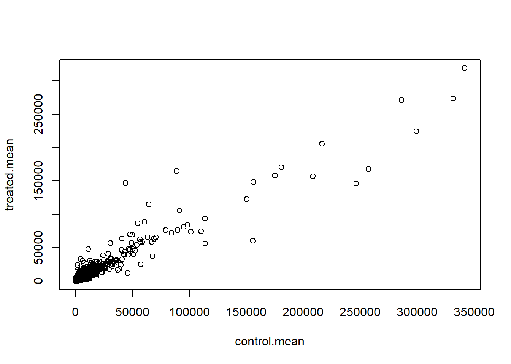
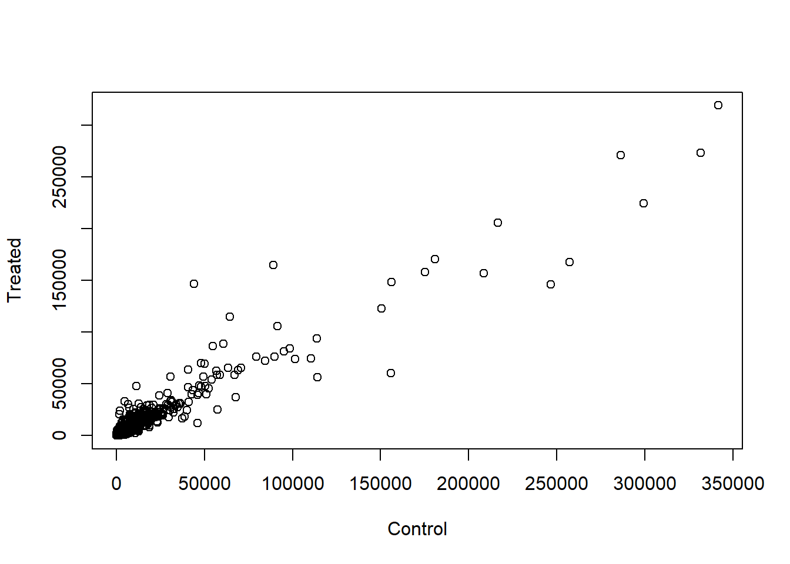
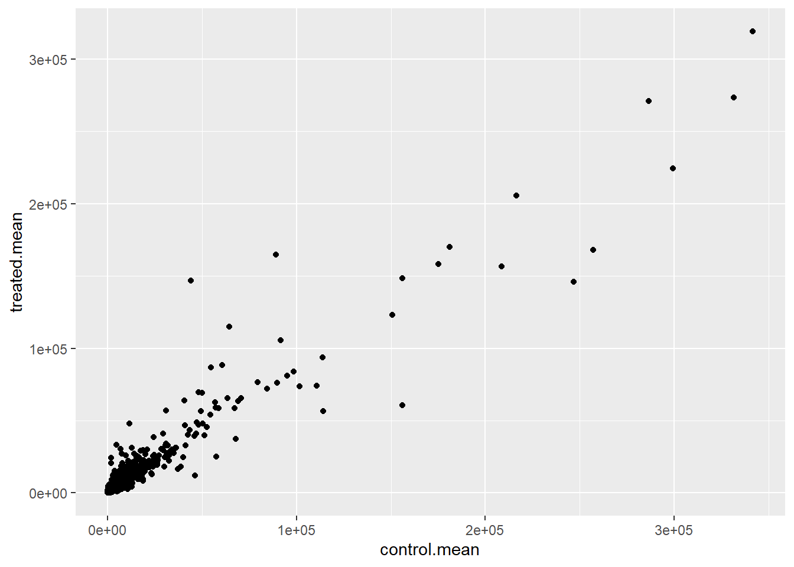
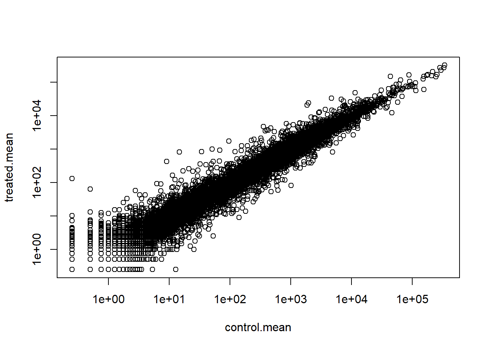
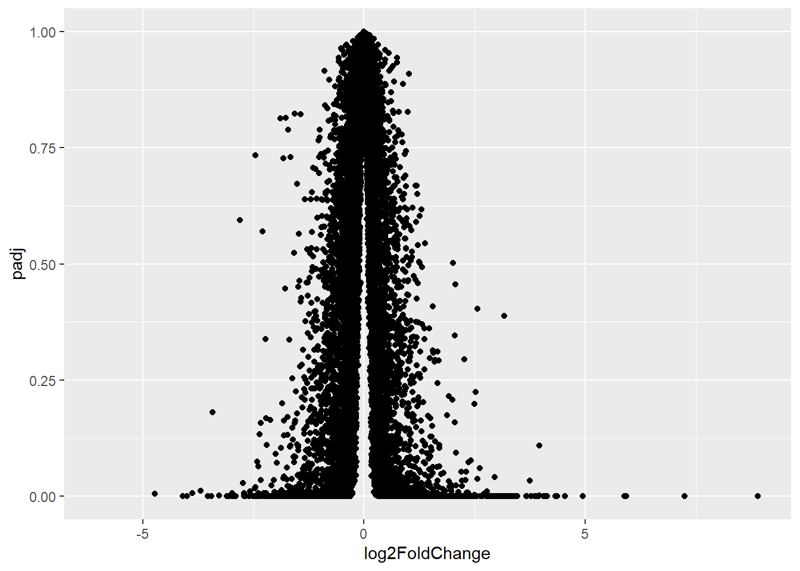
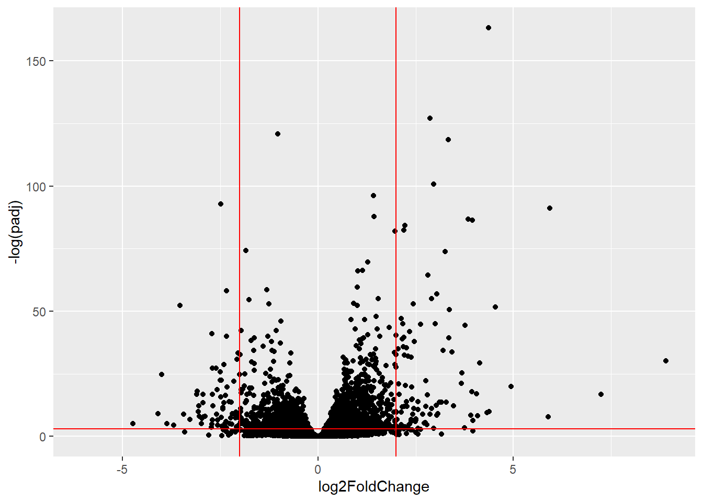
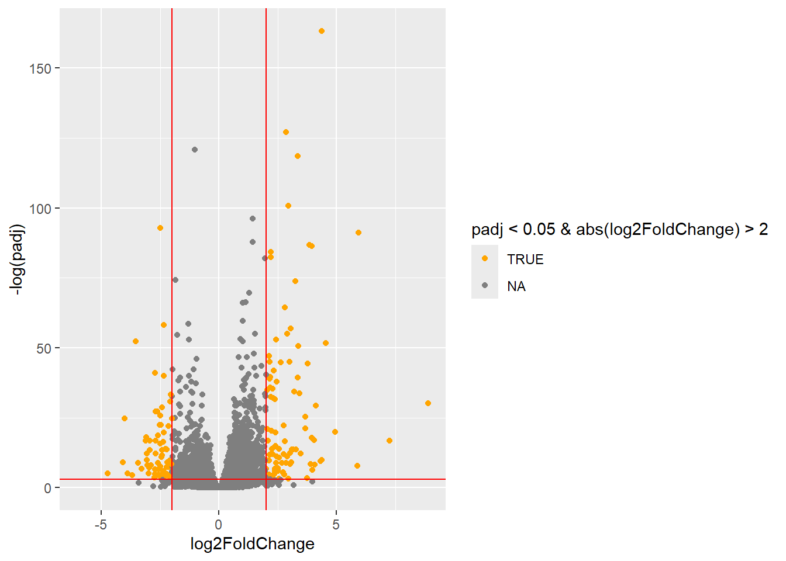

counts <- read.csv("airway_scaledcounts.csv", row.names=1)
metadata <- read.csv("airway_metadata.csv")Class 13: RNA Seq Analysis with DESeq2
Background
Today we will do our first RNASeq analysis of a dataset from a study of a common synthetic glucocorticoid, called dexamethasone, on airway smooth muscle cells.
Data Import
There are two input CSV files to read, the first is so-called “counts” data the 2nd is metadata about the design of the experiment (i.e. the columns in”counts”):
Q1. How many genes are in this dataset?
38694 genes.
nrow(counts)[1] 38694Q2. How many ‘control’ cell lines do we have?
We have 4 control cell lines.
sum(metadata$dex == "control")[1] 4table(metadata$dex)
control treated
4 4 control <- metadata[metadata[,"dex"]=="control",]
control.counts <- counts[ ,control$id]
control.mean <- rowSums( control.counts )/4
head(control.mean)ENSG00000000003 ENSG00000000005 ENSG00000000419 ENSG00000000457 ENSG00000000460
900.75 0.00 520.50 339.75 97.25
ENSG00000000938
0.75 library(dplyr)
Attaching package: 'dplyr'The following objects are masked from 'package:stats':
filter, lagThe following objects are masked from 'package:base':
intersect, setdiff, setequal, unioncontrol <- metadata %>% filter(dex=="control")
control.counts <- counts %>% select(control$id)
control.mean <- rowSums(control.counts)/4
head(control.mean)ENSG00000000003 ENSG00000000005 ENSG00000000419 ENSG00000000457 ENSG00000000460
900.75 0.00 520.50 339.75 97.25
ENSG00000000938
0.75 library(dplyr)
control <- metadata %>% filter(dex=="control")
control.counts <- counts %>% select(control$id)
control.mean <- rowMeans(control.counts)
head(control.mean)ENSG00000000003 ENSG00000000005 ENSG00000000419 ENSG00000000457 ENSG00000000460
900.75 0.00 520.50 339.75 97.25
ENSG00000000938
0.75 Q3. How would you make the above code in either approach more robust? Is there a function that could help here?
You can make the above code in either approach more robust by using rowSums or rowMeans, where instead of doing control.mean <- rowSums(control.counts)/4, you can do control.mean <- rowMeans(control.counts).
Q4. Follow the same procedure for the treated samples (i.e. calculate the mean per gene across drug treated samples and assign to a labeled vector called treated.mean)
treated <- metadata[metadata[,"dex"]=="treated",]
treated.mean <- rowMeans( counts[ ,treated$id] )
head(treated.mean)ENSG00000000003 ENSG00000000005 ENSG00000000419 ENSG00000000457 ENSG00000000460
658.00 0.00 546.00 316.50 78.75
ENSG00000000938
0.00 Analysis
head(counts) SRR1039508 SRR1039509 SRR1039512 SRR1039513 SRR1039516
ENSG00000000003 723 486 904 445 1170
ENSG00000000005 0 0 0 0 0
ENSG00000000419 467 523 616 371 582
ENSG00000000457 347 258 364 237 318
ENSG00000000460 96 81 73 66 118
ENSG00000000938 0 0 1 0 2
SRR1039517 SRR1039520 SRR1039521
ENSG00000000003 1097 806 604
ENSG00000000005 0 0 0
ENSG00000000419 781 417 509
ENSG00000000457 447 330 324
ENSG00000000460 94 102 74
ENSG00000000938 0 0 0Our Plan
We want to control our “control” vs “treated” (i.e. no drug vs drug experiments). We can calculate the mean count value for every gene (rows) in all 4 “control” experiments and compare it to the mean “count” value in all “treated” experiments (i.e. columns).
- Extract all “control” columns
- Calculate the mean for each row (gene) of these columns
- Do the same for “treated” to get a
treated.mean
metadata$dex == "control"[1] TRUE FALSE TRUE FALSE TRUE FALSE TRUE FALSEcontrol.inds <- metadata$dex == "control"control.counts <- counts[,control.inds]
dim(control.counts)[1] 38694 4head(control.counts) SRR1039508 SRR1039512 SRR1039516 SRR1039520
ENSG00000000003 723 904 1170 806
ENSG00000000005 0 0 0 0
ENSG00000000419 467 616 582 417
ENSG00000000457 347 364 318 330
ENSG00000000460 96 73 118 102
ENSG00000000938 0 1 2 0library(dplyr)
control.mean <- rowMeans(control.counts)treated.mean <-rowMeans(counts[,metadata$dex=="treated"])
head(treated.mean)ENSG00000000003 ENSG00000000005 ENSG00000000419 ENSG00000000457 ENSG00000000460
658.00 0.00 546.00 316.50 78.75
ENSG00000000938
0.00 For easy book-keeping lets store these two mean values together in one data.frame called mycounts
meancounts <- data.frame(control.mean, treated.mean)Q5 (a). Create a scatter plot showing the mean of the treated samples against the mean of the control samples. Your plot should look something like the following.
plot(meancounts)
plot(meancounts[,1],meancounts[,2], xlab="Control", ylab="Treated")
Q5 (b).You could also use the ggplot2 package to make this figure producing the plot below. What geom_?() function would you use for this plot?
You would use geom_point.
library(ggplot2)
ggplot(meancounts) + aes(control.mean, treated.mean) + geom_point()
Q. Re-draw or re-plot these on a log-log axis scale.
Q6. Try plotting both axes on a log scale. What is the argument to plot() that allows you to do this?
The argument that allows you to do this is ‘log’ or specifically log=“xy”.
plot(meancounts, log="xy")Warning in xy.coords(x, y, xlabel, ylabel, log): 15032 x values <= 0 omitted
from logarithmic plotWarning in xy.coords(x, y, xlabel, ylabel, log): 15281 y values <= 0 omitted
from logarithmic plot
We can compare the mean values of treated and control in terms of “log fold change values”. Typically we use log2 units of “treated/control”:
# No change = 0
log2(20/20)[1] 0# Up regulated = 1
log2(40/20)[1] 1# Down regulation, below the sloped line
log2(20/40)[1] -1Let’s add our Log2 Fold Change log2fc values to our meancounts data frame.
meancounts$log2fc <-log2(meancounts$treated.mean/meancounts$control.mean)head(meancounts) control.mean treated.mean log2fc
ENSG00000000003 900.75 658.00 -0.45303916
ENSG00000000005 0.00 0.00 NaN
ENSG00000000419 520.50 546.00 0.06900279
ENSG00000000457 339.75 316.50 -0.10226805
ENSG00000000460 97.25 78.75 -0.30441833
ENSG00000000938 0.75 0.00 -InfA common threshold for calling a gene “up regulated” is a log2fc value of +2. For “down regulated” it is -2.
First filter out zero count genes - as we can’t say anything about them if we don’t have any count data for them.
meancounts$log2fc <- log2(meancounts[,"treated.mean"]/meancounts[,"control.mean"])
head(meancounts) control.mean treated.mean log2fc
ENSG00000000003 900.75 658.00 -0.45303916
ENSG00000000005 0.00 0.00 NaN
ENSG00000000419 520.50 546.00 0.06900279
ENSG00000000457 339.75 316.50 -0.10226805
ENSG00000000460 97.25 78.75 -0.30441833
ENSG00000000938 0.75 0.00 -Infzero.vals <- which(meancounts[,1:2]==0, arr.ind=TRUE)
to.rm <- unique(zero.vals[,1])
mycounts <- meancounts[-to.rm,]
head(mycounts) control.mean treated.mean log2fc
ENSG00000000003 900.75 658.00 -0.45303916
ENSG00000000419 520.50 546.00 0.06900279
ENSG00000000457 339.75 316.50 -0.10226805
ENSG00000000460 97.25 78.75 -0.30441833
ENSG00000000971 5219.00 6687.50 0.35769358
ENSG00000001036 2327.00 1785.75 -0.38194109Q7. What is the purpose of the arr.ind argument in the which() function call above? Why would we then take the first column of the output and need to call the unique() function?
The arr.ind=TRUE argument is a logical that would help give the specific rows and columns that are ‘true’ values, indicating the genes and samples that have 0 counts. We would then take the first column of the output and call the unique() function as it removes duplicate rows (the genes) so they won’t be counted twice.
Q8. Using the up.ind vector above can you determine how many up regulated genes we have at the greater than 2 fc level?
There are 250 up regulated genes at the greater than 2 fc level.
up.ind <- mycounts$log2fc > 2
down.ind <- mycounts$log2fc < (-2)
sum(up.ind)[1] 250Q9. Using the down.ind vector above can you determine how many down regulated genes we have at the greater than 2 fc level?
There are 367 down regulated genes that are at the greater than 2 fc level.
up.ind <- mycounts$log2fc > 2
down.ind <- mycounts$log2fc < (-2)
sum(down.ind)[1] 367Q. How many genes are “up regulated” at +2 or above?
314 genes up regulated at either +2 or above.
sum(mycounts$log2fc >= 2)[1] 314Q10. Do you trust these results? Why or why not?
No we do not trust these results as there are 30,000 genes, and also as we’re only relying on fold change and we haven’t done any statistical tests like P-value testing to see if these differences are significant or not.
##DESeq2 Analysis
Let’s do this properly and put a P-value on these differences to keep our inner stats nerd happy!
library(DESeq2)Loading required package: S4VectorsLoading required package: stats4Loading required package: BiocGenericsLoading required package: generics
Attaching package: 'generics'The following object is masked from 'package:dplyr':
explainThe following objects are masked from 'package:base':
as.difftime, as.factor, as.ordered, intersect, is.element, setdiff,
setequal, union
Attaching package: 'BiocGenerics'The following object is masked from 'package:dplyr':
combineThe following objects are masked from 'package:stats':
IQR, mad, sd, var, xtabsThe following objects are masked from 'package:base':
anyDuplicated, aperm, append, as.data.frame, basename, cbind,
colnames, dirname, do.call, duplicated, eval, evalq, Filter, Find,
get, grep, grepl, is.unsorted, lapply, Map, mapply, match, mget,
order, paste, pmax, pmax.int, pmin, pmin.int, Position, rank,
rbind, Reduce, rownames, sapply, saveRDS, table, tapply, unique,
unsplit, which.max, which.min
Attaching package: 'S4Vectors'The following objects are masked from 'package:dplyr':
first, renameThe following object is masked from 'package:utils':
findMatchesThe following objects are masked from 'package:base':
expand.grid, I, unnameLoading required package: IRanges
Attaching package: 'IRanges'The following objects are masked from 'package:dplyr':
collapse, desc, sliceThe following object is masked from 'package:grDevices':
windowsLoading required package: GenomicRangesLoading required package: SeqinfoLoading required package: SummarizedExperimentLoading required package: MatrixGenericsLoading required package: matrixStats
Attaching package: 'matrixStats'The following object is masked from 'package:dplyr':
count
Attaching package: 'MatrixGenerics'The following objects are masked from 'package:matrixStats':
colAlls, colAnyNAs, colAnys, colAvgsPerRowSet, colCollapse,
colCounts, colCummaxs, colCummins, colCumprods, colCumsums,
colDiffs, colIQRDiffs, colIQRs, colLogSumExps, colMadDiffs,
colMads, colMaxs, colMeans2, colMedians, colMins, colOrderStats,
colProds, colQuantiles, colRanges, colRanks, colSdDiffs, colSds,
colSums2, colTabulates, colVarDiffs, colVars, colWeightedMads,
colWeightedMeans, colWeightedMedians, colWeightedSds,
colWeightedVars, rowAlls, rowAnyNAs, rowAnys, rowAvgsPerColSet,
rowCollapse, rowCounts, rowCummaxs, rowCummins, rowCumprods,
rowCumsums, rowDiffs, rowIQRDiffs, rowIQRs, rowLogSumExps,
rowMadDiffs, rowMads, rowMaxs, rowMeans2, rowMedians, rowMins,
rowOrderStats, rowProds, rowQuantiles, rowRanges, rowRanks,
rowSdDiffs, rowSds, rowSums2, rowTabulates, rowVarDiffs, rowVars,
rowWeightedMads, rowWeightedMeans, rowWeightedMedians,
rowWeightedSds, rowWeightedVarsLoading required package: BiobaseWelcome to Bioconductor
Vignettes contain introductory material; view with
'browseVignettes()'. To cite Bioconductor, see
'citation("Biobase")', and for packages 'citation("pkgname")'.
Attaching package: 'Biobase'The following object is masked from 'package:MatrixGenerics':
rowMediansThe following objects are masked from 'package:matrixStats':
anyMissing, rowMediansTo use DESeq2 we need to have our input data (our counts and metadata) stored together in a specific format that DESeq uses.
## Setup for DESeq
dds <- DESeqDataSetFromMatrix(countData=counts,
colData=metadata,
design= ~dex)converting counts to integer modeWarning in DESeqDataSet(se, design = design, ignoreRank): some variables in
design formula are characters, converting to factorsNow we can run the main analysis with the DESeq() function:
dds<- DESeq(dds)estimating size factorsestimating dispersionsgene-wise dispersion estimatesmean-dispersion relationshipfinal dispersion estimatesfitting model and testingWe can get our main results table from this dds object with the results() function:
res <- results(dds)
head(res)log2 fold change (MLE): dex treated vs control
Wald test p-value: dex treated vs control
DataFrame with 6 rows and 6 columns
baseMean log2FoldChange lfcSE stat pvalue
<numeric> <numeric> <numeric> <numeric> <numeric>
ENSG00000000003 747.194195 -0.3507030 0.168246 -2.084470 0.0371175
ENSG00000000005 0.000000 NA NA NA NA
ENSG00000000419 520.134160 0.2061078 0.101059 2.039475 0.0414026
ENSG00000000457 322.664844 0.0245269 0.145145 0.168982 0.8658106
ENSG00000000460 87.682625 -0.1471420 0.257007 -0.572521 0.5669691
ENSG00000000938 0.319167 -1.7322890 3.493601 -0.495846 0.6200029
padj
<numeric>
ENSG00000000003 0.163035
ENSG00000000005 NA
ENSG00000000419 0.176032
ENSG00000000457 0.961694
ENSG00000000460 0.815849
ENSG00000000938 NASummary Figure
A common plot in this type of work combines log2fc values and adjusted P-values together into one figure to highlight genes to focus on that both change allot in expression values and that change is significant. Some folks call this a volcano plot
ggplot(res) +
aes(log2FoldChange, padj) + geom_point()Warning: Removed 23549 rows containing missing values or values outside the scale range
(`geom_point()`).
ggplot(res) +
aes(log2FoldChange, -log(padj)) + geom_point() +
geom_vline(xintercept =-2, col="red") +
geom_vline(xintercept =2, col="red") +
geom_hline(yintercept =-log(0.05), col="red")Warning: Removed 23549 rows containing missing values or values outside the scale range
(`geom_point()`).
Save our results so far
write.csv(res, file="my_results.csv")ggplot(res) +
aes(log2FoldChange, -log(padj),
color = padj < 0.05 & abs(log2FoldChange) > 2) +
geom_point() +
geom_vline(xintercept =-2, col="red") +
geom_vline(xintercept =2, col="red") +
geom_hline(yintercept =-log(0.05), col="red")+
scale_color_manual(
values = c( "TRUE" = "orange"),
)Warning: Removed 23549 rows containing missing values or values outside the scale range
(`geom_point()`).